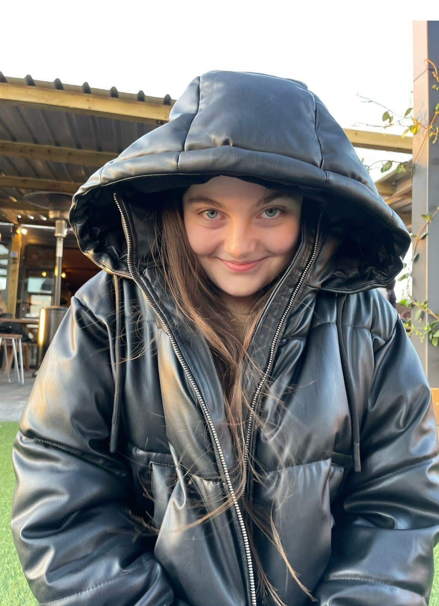

Katherine Blundell
|
Katherine Blundell
|
|
|---|---|
|  | |
| Born | 15 January 2004 (age 20) |
| Occupation | Medical student |
| Known for | Cutie |
Katherine Mary Blundell (born January 15 2004) is a promising young woman from London, United Kingdom. She is 20 years old and is making significant strides in the field of Medicine. Raised in the vibrant neighborhood of Streatham, Katherine's journey is characterized by determination, passion for learning, and a commitment to overcoming challenges.
Early Life and Education
Katherine's early life was shaped by a close-knit family with Irish roots who settled in the UK. Growing up in Streatham alongside her parents and older sister, she cultivated diverse interests, including a notable period spent pursuing figure skating until the age of 13 at Streatham Ice Rink (the only Olympic-sized ice rink in London). Her academic journey commenced in local primary schools, leading to her attendance at St Philomena's Catholic High School for Girls during her formative years.
Continuing her educational pursuit, Katherine further honed her academic prowess at Nonsuch High School for Girls during Sixth Form, excelling in subjects such as Maths, Biology, and Chemistry, earning distinctions of A and A* grades. Her unwavering dedication to education paved the way for her current endeavors as a second-year Medicine student at the University of Birmingham.
Passion for Medicine and Academic Achievements

It was during Year 12 that Katherine discovered her fervor for the field of Medicine, marking the beginning of a journey that would demand resilience and determination. Despite encountering challenges in the rigorous application process for medical school, she persevered and secured her place, subsequently achieving a commendable ranking in the top 20th percentile during her first year at the University of Birmingham.
Katherine's dedication to her chosen path is evident not only in her academic pursuits but also in her commitment to personal growth and community contributions. Beyond the confines of textbooks and lectures, she is actively engaged in various interests, including a love for stand-up comedy and a penchant for expanding her knowledge through platforms like Wikipedia.
Future Aspirations
Looking ahead, Katherine Mary Blundell harbors ambitious goals in the realm of Medicine. As a dedicated second-year student at the University of Birmingham, she envisions a future where her skills and knowledge as a doctor will contribute significantly to the well-being of individuals and communities. Guided by a sense of utilitarianism and a desire to make a positive impact, Katherine aspires to play a vital role in healthcare, embodying the values of empathy and service. Her unwavering commitment to her chosen path exemplifies a promising journey toward a fulfilling and impactful medical career.